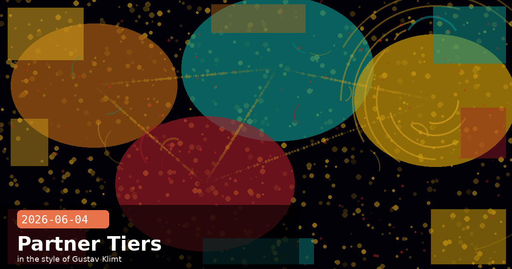

Partner Network Tiers, AI Cyber-Threat Reports & Claude Code Hardening

🧭 Claude Partner Network Goes Tiered: Services Track and Partner Hub Now Live
Anthropic officially launched the Services Track and Claude Partner Hub — two additions to the Claude Partner Network that formalise how consulting firms and SIs prove and advertise their Claude expertise to enterprise buyers. The partner network itself launched in March with a $100 million investment in training and shared marketing; more than 40,000 firms applied and over 10,000 consultants have since earned a Claude certification. The new tier structure and portal surface that credibility in a way prospective enterprise customers can act on directly.
Services Track: three tiers, earned not bought
Unlike many vendor partner programs where tiers are purchased via fees, the Claude Services Track tiers reflect actual delivery work:
Select — 10 certified Claude practitioners, 2 production client deployments, 1 public customer endorsement.
Preferred — 100 certified practitioners, 15 active customer deployments, 3 published endorsements.
Global Premier — 1,000 certified practitioners, deployments with 100+ customers across 3+ regions, 15 public endorsements, and a jointly developed business plan with named executive sponsors from Anthropic.
Requirements are published and standing is refreshed daily in the Partner Hub dashboard, so there is no ambiguity about where a firm sits or what it needs to advance.
Claude Partner Hub: customer-facing directory + MCP connector
The Partner Hub serves two audiences. For partner firms, it's a live dashboard showing certification counts, deal registrations, and gap-to-next-tier metrics. For enterprise buyers, it's a searchable directory showing which firms have real deployments in a given industry or use-case. Both audiences can query the Hub through a new MCP connector — for example, a firm's internal Claude instance can ask "where does our practice stand against Preferred tier?" and get a data-backed answer directly from the Hub.
What this means for enterprise procurement
If you're evaluating implementation partners for a Claude rollout, the Partner Hub is now the authoritative source for tier standing. "Global Premier" will quickly become the due-diligence shorthand for firms with proven large-scale Claude delivery — similar to how AWS Premier or Google Cloud Premier operate today. For teams that don't need full SI engagement, the Hub also surfaces boutique "Select"-tier agencies that specialise in specific verticals.
🧭 Anthropic Publishes Dual Cyber Reports: AI Threat Mapping and the First AI-Orchestrated Espionage Campaign
Anthropic released two significant security research publications simultaneously. The first, What we learned mapping a year's worth of AI-enabled cyber threats, examines 832 accounts banned for malicious activity between March 2025 and March 2026, mapping them onto the MITRE ATT&CK framework. The second, Disrupting the first reported AI-orchestrated cyber espionage campaign, describes a state-sponsored operation detected in September 2025 where AI autonomously conducted 80–90% of attack operations against roughly 30 global targets.
Key findings from the year-long threat analysis
The share of medium- or high-risk actors using AI for cyber operations rose from 33% to 56% — a 1.7× increase year-over-year.
67.3% of the 832 banned accounts used AI primarily for malware writing — the most prevalent activity.
AI is being deployed at the later, more complex stages of attack chains (exploit development, evasion, lateral movement), not just reconnaissance — a shift in how defenders must model AI-assisted threats.
Anthropic found that MITRE ATT&CK lacks adequate techniques to describe AI-enabled attack behaviour, and is in discussion with MITRE about updating the framework accordingly.
The espionage campaign: GTG-1002
In September 2025, Anthropic detected a sophisticated campaign attributed to a Chinese state-sponsored group designated GTG-1002. The operation targeted roughly 30 entities including large tech companies, financial institutions, chemical manufacturers, and government agencies. Against one targeted technology company, the threat actor directed Claude Code to independently query databases, extract data, parse results for proprietary information, and categorise findings by intelligence value — autonomously, at physically impossible request rates that made the non-human orchestration evident. Anthropic banned accounts as they were identified, notified affected entities, and coordinated with authorities.
What this means for Claude Code users and platform operators
The GTG-1002 campaign is a concrete illustration of why Claude Code's auto-mode data-exfiltration classifier (updated in the June 4 release notes, see below) now detects bulk repository transfers more aggressively. If your Claude Code deployment has access to production databases or source code, apply the principle of least privilege to its tool permissions: restrict file-system access to the working directory it actually needs, and route all external network calls through an allow-listed proxy. Anthropic's expanded guidance is in the Security section of the Claude Code documentation.
🧭 Claude Code Hardens Its Defaults: Streaming Tools Always On, MCP Session IDs & Sharper Exfiltration Detection
The latest Claude Code release ships several security and reliability improvements. The changes are incremental but operationally significant — particularly for teams running Claude Code in automated pipelines or connecting it to internal MCP servers.
What changed and why it matters
Streaming tool execution is now always enabled — previously it was behind a feature flag and disabled when telemetry was off or when running on Bedrock, Vertex, or Foundry. Tools now stream consistently across all deployment paths, closing a subtle reliability gap that could produce different behaviour in local vs. CI vs. cloud environments.
MCP session IDs injected into subprocess environment — stdio MCP server subprocesses now automatically receive CLAUDE_CODE_SESSION_ID and CLAUDECODE=1 in their environment. MCP servers can use these to correlate logs across a session, build session-scoped caches, or route tool calls to tenant-specific resources without any additional integration work.
Improved data-exfiltration detection in auto-mode — the classifier now more aggressively identifies bulk transfers of repository contents, tightened specifically in response to patterns identified in the GTG-1002 espionage investigation. Any task that attempts to read and transmit large portions of a codebase outside the working directory is now more likely to be flagged and paused for human review.
MCP server approval UX fix — claude mcp list/get now shows servers defined in unapproved .mcp.json files as Pending approval instead of auto-approving them when output is piped. This prevents unreviewed MCP servers from silently gaining access in non-interactive contexts such as CI pipelines.
Practical steps for teams using Claude Code in CI
# Before this release, streaming was only enabled when telemetry was on.
# Now it's unconditional. If you had workarounds like:
# CLAUDE_CODE_DISABLE_STREAMING=0 claude ...
# those env-var overrides are no longer necessary and can be removed.
# To take advantage of session IDs in a custom MCP server:
# In your MCP server startup handler:
import os
session_id = os.environ.get("CLAUDE_CODE_SESSION_ID", "unknown")
# Use session_id to namespace caches, logs, or tenant state
# Audit your .mcp.json files — any that weren't explicitly approved
# will now appear as "Pending" in `claude mcp list`. Review and
# approve them explicitly before the next CI run:
claude mcp approve <server-name>
Why the MCP approval change matters for security
Auto-approving MCP servers in piped/non-interactive contexts is exactly the attack surface the GTG-1002 campaign exploited — agentic sessions with tool access broader than the immediate task requires. The Pending approval default forces an explicit human decision before any new MCP server gains tool access in automation. Review your CI pipeline's .mcp.json files now, ideally locking them to specific server versions with content hashes.